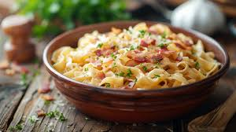

Macaroni Corn Casserole

Description
This macaroni corn casserole is creamy and slightly sweet. It always goes over well with family and friends!
Ingredients
- 1 (15.25 ounce) can whole kernel corn, with liquid
- 1 (14.75 ounce) can cream-style corn
- 1 cup small uncooked macaroni pasta
1- cup cubed processed cheese
- ½ cup butter, cut into pieces
Steps
-
Preheat the oven to 350 degrees F (175 degrees C).
-
Preheat the oven to 350 degrees F (175 degrees C).
Stir whole kernel corn, cream-style corn, uncooked macaroni pasta, processed cheese, and butter together in
a large bowl until well combined; transfer mixture into a casserole dish.
-
Bake, covered, in the preheated oven for 30 minutes. Uncover, stir, and continue baking until macaroni is
tender but firm, about 30 minutes more.
Home